|
惡靈古堡～聖女密碼-----地圖攻略─Claire篇
|
|
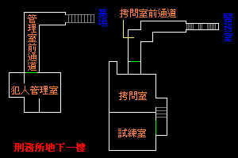 一開始的位置在犯人管理室，牢裡有一株綠色藥草，裝備身上唯一的道具打火機，看到Rodrigo站在門 口，他會放Claire出來。拿取桌上的小刀並且裝備，附近有手槍子彈，通道上有打字機和色帶目前還不 需要，桌旁有手槍子彈，離開此處前往墓場。 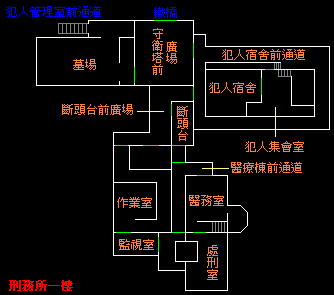 在墓場會蹦出五隻僵屍，此處的僵屍死了下次回來也會再復活，所以能閃則閃，往守衛塔前廣場。在 廣場和Steve相遇，拿到M93R手槍，手槍附近屍體上有手槍子彈。經犯人宿舍前通道往犯人集會室， 這裡有三隻僵屍，還有手槍子彈、綠色藥草、刑務所地圖。犯人宿舍的床上有犯人的日記，拿取窗邊 的手槍子彈會發生僵屍偷襲，所以建議先到浴室屍體拿手槍子彈，擊倒偷襲僵屍後撿取他掉落的 M-100P半自動手槍。 從宿舍前通道往斷頭台前廣場時發生了屍體被拖入的事件，往作業室，這裡任何金屬的東西都不能攜 帶，必須先放入門口的置物Box，如果不小心啟動了機關，則需先調查門口的按鈕。在監視室再遇 Steve，電腦桌抽屜有重要的老鷹徽章，這裡有一扇無法開啟的門無須理會，打開門 一旁牆上的按鈕， 回到作業室調查機器把老鷹徽章放入，附近桌上有使用者操作手冊，在作業室裡的道具別拿了吧，拿 了也帶不出去。回到斷頭台前廣場，啟動鐵捲門，到裡面拿滅火器，然後到鐵網門內斷頭台拿南京瑣 鑰匙，這把鑰匙用來打開犯人宿舍前通道通往斷頭台前廣場的門，為玩家縮短路程。 拿著滅火器回到墓場，撲滅燃燒的火，得到一只手提箱，調查把手提箱轉到上面方向打開來看看吧。 把箱內的特殊合金TG-01拿到作業室的機器上加工，得到特殊合金徽章。拿到守衛塔前廣場打開通往 鐵橋的路。 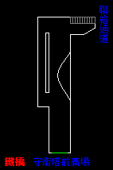 鐵橋上的吉普車有手槍子彈，盡頭有綠色藥草，推動鐵箱蓋住火焰且與另一鐵箱並排，爬上鐵箱往另 一邊離開。 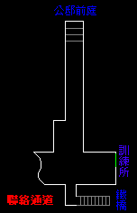 通過聯絡通道進入公邸前庭。 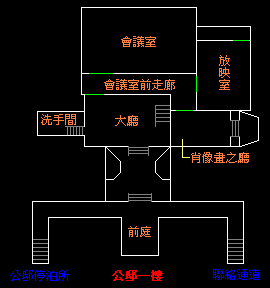 前庭有綠色藥草，別忘了大門前的海軍之證。大廳桌上有手槍子彈，進入洗手間，裡頭有幾隻蝙蝠， 裝備打火機就能讓蝙蝠遠離，這裡可以找到手槍子彈、急救劑、鋁合金製手提箱。到手後上二樓。 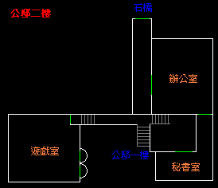 上樓後右轉進入秘書室，拿秘書的日記、綠色藥草、手槍子彈、ID卡片，這裡有色帶及打字機。 帶著ID卡片上的密碼回到一樓大廳，在電腦前輸入ID的３個英文加上４位數字，就可以打開大廳的另 一扇門。經會議室前走廊到放映室，桌上有手槍子彈，開啟螞蟻展示櫃開關觀看一段影片，影片播畢 後出現一條新通道，進入拿取操舵輪。回到公邸大廳要離開公邸時聽到Steve的呼喊聲，此時必須回到 放映室。在放映室打開兩個手槍按鍵解除機關（CE）。 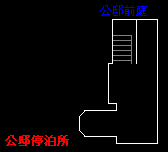 回到大廳遇上Alfred，事件結束後前往公邸庭泊所，樓梯旁的小道可取得地圖和手槍子彈。乘船處附 近有十字弓箭，在公邸庭泊所使用操舵輪，進入潛水艇（地圖略），這裡可以拿到腰包。調查潛水艇 開關，讓其下沉後爬梯子上去。 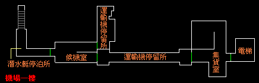 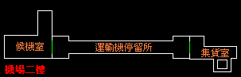 到達機場的潛水艇停泊所，候機室裡有手槍子彈、色帶，到集貨室搭乘升降機到樓上操作貨櫃夾，夾 起樓下的貨櫃箱，利用影子的位置做判斷，很容易就可以夾起來。 回到一樓打開原本被貨櫃擋住的開關，運貨的升降梯升起，出現一堆僵屍，拿取升降梯上的Biohazard 卡片和十字弓箭。 回潛水艇停泊所，操作舵輪回公邸，經聯絡通道往訓練所的訓練場。
在訓練場可以找到十字弓箭，這裡出現的砂蟲如果將之擊退，那麼以後遇到的砂蟲生命力將會大減， 如果不想打，直接離開即可。在保管室有４隻僵屍加上三副十字弓箭，打開浴室浴池旁的控制水閥， 水位降低後在浴池找到附有名牌的鑰匙，調查後得到保管庫鑰匙。 警備室中按下控制台開關，可在影印機處取得訓練所地圖，使用保管庫鑰匙打開保險櫃，裡面有十字 弓用火藥。附近有十字弓箭和綠色藥草。上二樓準備室。
準備室桌上有十字弓槍、通行密碼的便條紙，離開時發生事件。 回到一樓在警備室前走道使用Biohazard卡片，來到集會廣場。在集會廣場遭到Alfred狙擊，趕緊跑上 二樓追他便可安全。北側走道底部有手槍子彈，休息室裡有打字機、色帶、Box、綠藥草，沙發上有 止血劑，這瓶止血劑是要交給Rodrigo的，以後再去就可以了。 出休息室後北側走道被Alfred封閉，只好往倉庫走，倉庫地上可以找到Ingram M-10衝鋒槍，拿取後發 生Bander偷襲，而且可以看到衝鋒槍子彈在樓下，這隻一定要將之擊敗才可繼續，勝利後下樓梯，由 一樓倉庫剛打開的門離開。此時Bander死而復生偷襲Claire，Steve出現英雄救美，之後Claire會用剛到手 的M-10衝鋒槍交換Steve的黃金雙槍並幫他拿取子彈。接著兩人遭到Alfred陷害，下降到訓練所地下一 樓。 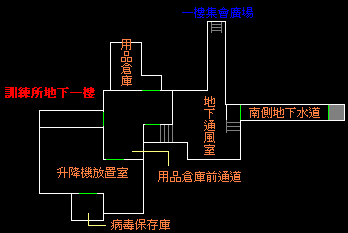 來到的地方是地下一樓的升降機放置室，角色切換成Steve，目的地是南側地下水道，其中地下通風室 有好幾隻僵屍，善用油桶通過。 在南側地下水道兩人會面（牆上石獅像口中有手槍子彈），一起搭乘電梯回到訓練所一樓，車庫旁通 道有手槍子彈。到車庫時發生事件，碰到Steve變成僵屍的父親，讓Steve沮喪不已。車庫可以拿到手槍 子彈，先往模型展示室，牆上圖畫的對面拿到老鷹家徽，角落還有打字機和色帶。往戰車放置場，這 裡木箱上有十字弓箭，推開戰車下方有手槍子彈。打開另一扇鎖上的門出去，經訓練場重新回到一樓 集會廣場。 上二樓集會廣場，正中央看臺上有一個機關，使用老鷹家徽後得到徽章卡片。回到一樓集會廣場往訓 練所地下一樓地下通風室，使用徽章卡片打開柵欄。在用品倉庫前通道同樣用徽章卡片打開柵欄，柵 欄裡側有榴彈槍。用品倉庫裡有手槍子彈、硫酸彈，不過硫酸彈所在櫃子裡，需要簡易開鎖工具（ 將止血劑交給Rodrigo後取得）。 回南側地下水道搭電梯往訓練所二樓。打開通往司令室的門，這裡可以拿到榴彈、綠色藥草兩株，調 查監視螢幕得到陸軍之證，使用監視系統，將焦點移至監視房間中牆上的一幅畫，可以看到上面有四 位數密碼，此時生物實驗室換氣完畢。 回到訓練所二樓的準備室（在一樓需刷卡），如需整理道具可先到二樓的休息室（需刷卡）。在生物 實驗室門口輸入剛才看到的四位數密碼後進入，實驗室裡有硫酸彈、人骨繪畫，拿取人骨繪畫後遭到 襲擊，趕緊逃出，需在時間限制內逃回一樓。 人骨繪畫到手後到訓練所一樓的模型展示室，將畫掛在牆上，出現隱藏模型，隱藏模型上得到黃金鑰 匙，旁邊抽屜需用簡易開鎖工具打開，裡面有急救噴霧。 帶著黃金鑰匙回公邸一樓會議室前走廊（注意一路上敵人重新配置），用黃金鑰匙打開肖像畫之廳。 肖像畫之廳有許多畫像，都是Ashford歷代主人的畫像，每幅畫像下都有按鈕，打開的順序是： 唯一的女性～Veronica ==> 抱著小孩的～Stanley ==> 正面側坐的～Thomas ==> 側坐後方有 鐘 的～Arthur ==> 正在看書的～Edward ==> 側坐後方有燭臺的～Alexander 最後按下最大幅的Alfred，成功的話畫像會轉為Alexia，調查後得到當主繼承祝詞、陶壺，調查陶壺的 瓶口，得到女王蟻飾物。 回到公邸一樓的秘書室，在通往辦公室的門上放入黃金雙槍即可打開。辦公室桌上有手槍子彈，調查 辦公桌上的文件，得知左右、左、右、右右右（四組），將四組輸入一旁音樂鐘座可以得到四位數字 （注意，輸入一組後得到的數字才是密碼，例如：第一組為左右，則必須把左右都輸入完出現的數字 才算，失敗了請重來），在電腦中輸入這四位數字，出現隱藏通道，通道上有藍藥草，出去往石橋。 石橋通往私邸一樓噴水池廣場。 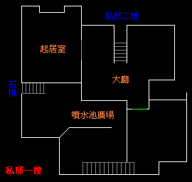 噴水池廣場有幾隻Bander，上階梯旁邊有紅色藥草。大廳裡有蝙蝠，可以裝備打火機。起居室裡有一 隻Bander、手槍子彈、色帶、十字弓箭。從大廳樓梯上二樓。 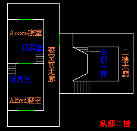 大廳二樓迴廊上有手槍子彈、急救噴霧。寢室前走廊上發生劇情，偷聽到Alexia的談話，走廊上有綠 色藥草、手槍子彈。進入Alexia的寢室，調查音樂唱盤播放機放上女王蟻的飾物，將裡面的音樂唱盤 取出，並且在床上找到銀鑰匙。 回到公邸二樓，用銀鑰匙打開遊戲室的門，但是還不用進去。進入一樓的會議室，裡面有兩隻Bander 、老鷹家徽、手槍子彈、Hunk的報告書。 拿到老鷹家徽後開始往回走，此時也可以帶著止血劑回去找Rodrigo。一直回到刑務所一樓的斷頭台， 在門前使用老鷹家徽開門。在醫療棟前通道上有綠色藥草，進入醫務室。醫務室中有手槍子彈、急救 噴霧、解剖醫生的手記，往處刑室。處刑室裡有紅藥草、手槍子彈、鋁合金製手提箱，手提箱用簡易 開鎖工具打開，裡面是M93R手槍強化組件，拿完後回醫務室。醫務室碰上變成僵屍的解剖醫生，他 的生命力和移動速度都比一般僵屍優越，要小心，解決後在他身上找到玻璃眼珠，拿到少了一顆眼珠 的人體模型上使用，會出現隱藏通路。 拷問室前通道上有綠色藥草。拷問室裡有十字弓箭、手槍子彈。試煉室中央可以找到一把生鏽之劍， 此時觸動機關，趕緊推動中央像石磨的機關，解除毒氣後把生鏽之劍插入剛才拔出來的地方，跑出一 隻僵屍，擊斃他拿取鐵棺裡的鋼琴演奏紙捲。回醫療棟前通道，在監視室前有手槍子彈，爬過擋住監 視室門的箱子將箱子由裡往外推，這時就可以進作業室將所有之前無法取出的道具由這個門帶出。 往回到公邸一樓前庭，遇到Wesker。到公邸二樓遊戲室，遊戲室裡有手槍子彈、弓箭火藥、綠色藥草 ，把鋼琴演奏紙捲在鋼琴前使用，然後在吃角子老虎機上找到王樣蟻飾物。 拿到這個重要道具後再次前往私邸二樓，這次選擇進入Alfred的寢室，將王樣蟻飾物放入唱盤播放機 ，打開後再放入之前取得的音樂唱盤，床上出現樓梯通道。 樓梯上方是玩具室（地圖略），玩具室可以找到綠色藥草、銀蜻蜓，調查銀蜻蜓拔除翅膀，然後嵌入 牆上螞蟻圖案的嘴，房間中央的旋轉木馬會轉動，爬上轉動過後的樓梯到達書房。 書房左側有新聞簡報，中央有色帶、打字機、手槍子彈，右側推動箱子爬上去調查書櫃上方，找到 Alfred的告白手記、空軍之証。由玩具室下來通到Alexia的房間，遇到Alexia偷襲，還好Steve即時出現 ，追擊Alexia到Alfred的寢室，發現原來剛才的女子是Alfred假扮的。 帶著陸、海、空軍之証來到公邸庭泊所，Steve正在那裡等著，搭上潛水艇離開。在機場一樓往運輸機 停留所，使用三個重要道具後進入運輸機之中，但是發現運輸機前方有鐵橋擋路，於是Claire必須去 把鐵橋升起，離開前帶走地上的操作桿。回機場一樓，經由集貨室升降梯到二樓候機室，將操作桿插 入並啟動把鐵橋升起，完成後繼續往前走，在另一個房間的一堆屍體中找到機場鑰匙。 回到一樓集貨室，用機場鑰匙打開電梯的門，將卡住電梯的箱子都推進電梯裡，就請玩家自己動動腦 囉，搭乘電梯離開。 從電梯出來到熟悉的訓練所附近，只好從這裡趕回公邸停泊所，但是在聯絡通道上會遇到Tyrant。 搭乘停泊所的潛艇回到機場，趕緊去和Steve會合，開著飛機落跑。不料Tyrant卻追上飛機了，駕駛艙 可以整理裝備，建議使用B.O.W.彈，進入後機艙千萬不要留在原地以免被打到死都無法還擊，但也要 小心不可過於接近後側開口（會被擊落），攻擊到Tyrant噴出一攤血後，趕緊去調查門邊的開關，就 可以用箱子把Tyrant打落飛機。 發生劇情，Alfred動了手腳，飛機自動飛往南極方向，降落後來到南極基地地下一樓縱穴通道。 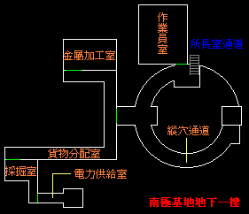 往所長室前通道。
所長室前通道有一群飛蛾，打死了也還會再出現，可能會讓玩家中毒或是產卵在Claire身上，最好清 光後再通過。通道上有藍色藥草盆。 所長室可以整理裝備，桌子附近有色帶、十字弓箭，牆邊有綠色藥草。 進入貨物分配室，左手邊有散彈，直接進入武器藥品倉庫。 倉庫裡有採掘室的鑰匙，在轉角的櫃子裡有自動步槍，但是由於轉換視點的關係不易發覺。最裡側有 火藥引信，如果之前沒將止血劑交給Rodrigo，想必打火機還在身上吧，把火藥引信裝到旁邊的鐵櫃上 ，用打火機引爆，櫃子裡有三副手槍子彈。 前往B.O.W.保管倉庫，裡面有煩人的大蜘蛛，其他還有藍、綠色藥草，手槍子彈、十字弓箭，和條碼 貼紙。 回到貨物分配室，在房間中央有尚未供電的電子儀版，在輸送帶上有一個木箱，將條碼貼紙貼上。 往採掘室，採掘室樓梯上方有一個氣體流通管務必要調查，接著進入電力供給室。 電力供給室裡除了僵屍犬外，還有三株綠色藥草、手槍子彈，打開角落的電源開關（開關旁有綠色藥 草），然後再打開供給室中央的控制面板，這下電源總算開啟了。 回貨物分配室，打開中央的電子儀版，木箱就送進B.O.W.保管倉庫。此時B.O.W.保管倉庫門旁的透明 玻璃罩放下，可以拿到裡面的防毒面具。 往回到所長室，推開角落可疑的書櫃，再往裡走會發生老鼠跑出來的事件，調查老鼠出來的鐵櫃，找 到Alexander的手記，並且可以找到按鈕，按下去出現通道，裡面看到下方有一隻怪物就是Alexander， 角落有一個盆栽，轉個方向調查發現機械室的鑰匙。 回縱穴通道，進入作業員室，裡面有四副手槍子彈、地圖、急救噴霧、作業員的日記、色帶、十字弓 火藥。若是拿起其中閃閃發亮的十字弓火藥則所有的僵屍都會復活，但是如果不讓僵屍復活，有些東 西是拿不到的，就看玩家自己決定囉。 出作業員室，經貨物分配室到採掘室，此時先不要接近前方的操作台，沿著邊邊先到電力供給室。電 力供給室地上有活門轉盤。回到採掘室會碰到Steve並發生毒氣外洩事件（如果還沒進電力供給室就 發生毒氣外洩，那麼請帶上防毒面具再來吧）。 在採掘室的對面有一間金屬加工室，房間裡有一個打不開的門關著一隻僵屍，這個門Claire無法打開 的，其他還有兩副手槍子彈，藍、綠色藥草，色帶。調查這裡的金屬加工器，並放上活門轉盤，將他 加工至適當形狀（注意！先前必須調查過地下二樓採掘室的氣體流通管，否則無法進行加工）。 因為待會就要進行和Alexander的決戰，所以經過所長室時可以稍微整理裝備並存檔，身上建議保留至 少兩格道具欄並攜帶藍色藥草。 將活門轉盤加工好後，當然是要前往地下二樓的採掘室，在氣體流通管前使用，此時終於把毒氣都控 制住了。沒想到Alfred竟然想要狙擊Claire，幸好Steve即時現身，事件發生後別忘了先去拿Alfred掉落 的 狙擊槍，然後和Steve一起上開採機逃出。 劇情結束後來到直昇機停機坪（地圖略），停機坪的兩個角落有手槍彈、急救噴霧，正要離開時 Alexander出現，想必要來一場死鬥。 戰鬥時要小心不要讓Claire離開中央附近位置，以免被擊落﹔還有，剛才拿到的狙擊槍終於可以派上用 場（如果剛剛沒有拿狙擊槍也可以使用其他武器），但是由於彈藥有限，所以請仔細瞄準後再攻擊， 如果彈藥用完了就只好拿其他槍支了﹔另外，Alexander噴出的毒液會使人中毒，一般而言用藍色藥 草就可以解毒，可是若是中毒太多次則會變成無法解毒的狀態。 解決Alexander後，欣賞一段劇情，Claire篇就結束了。 （未經同意禁止轉載） |
惡靈深淵Biohazard Abyss http://98.to/coolbio